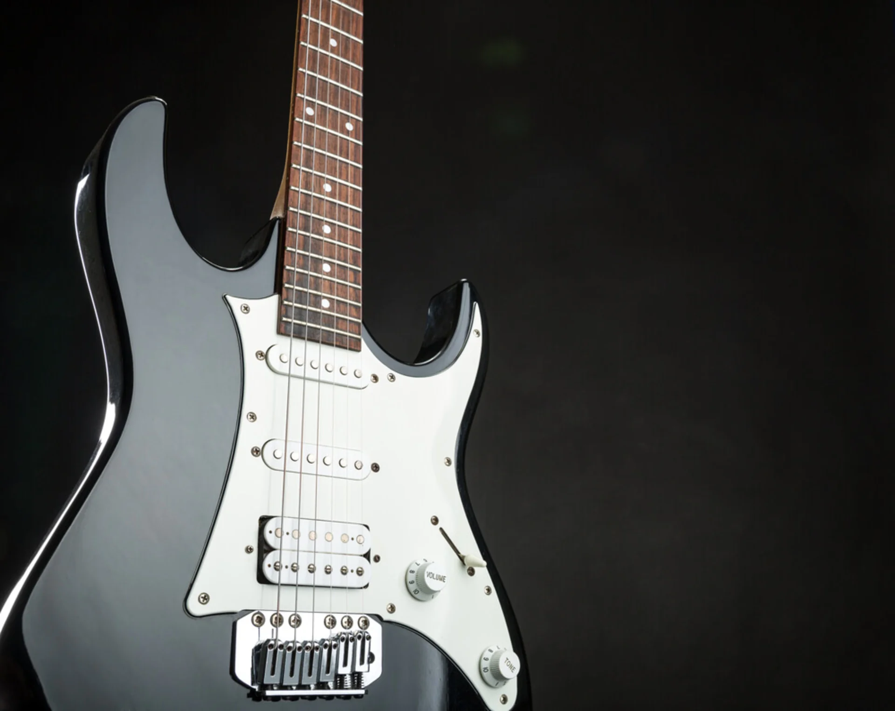
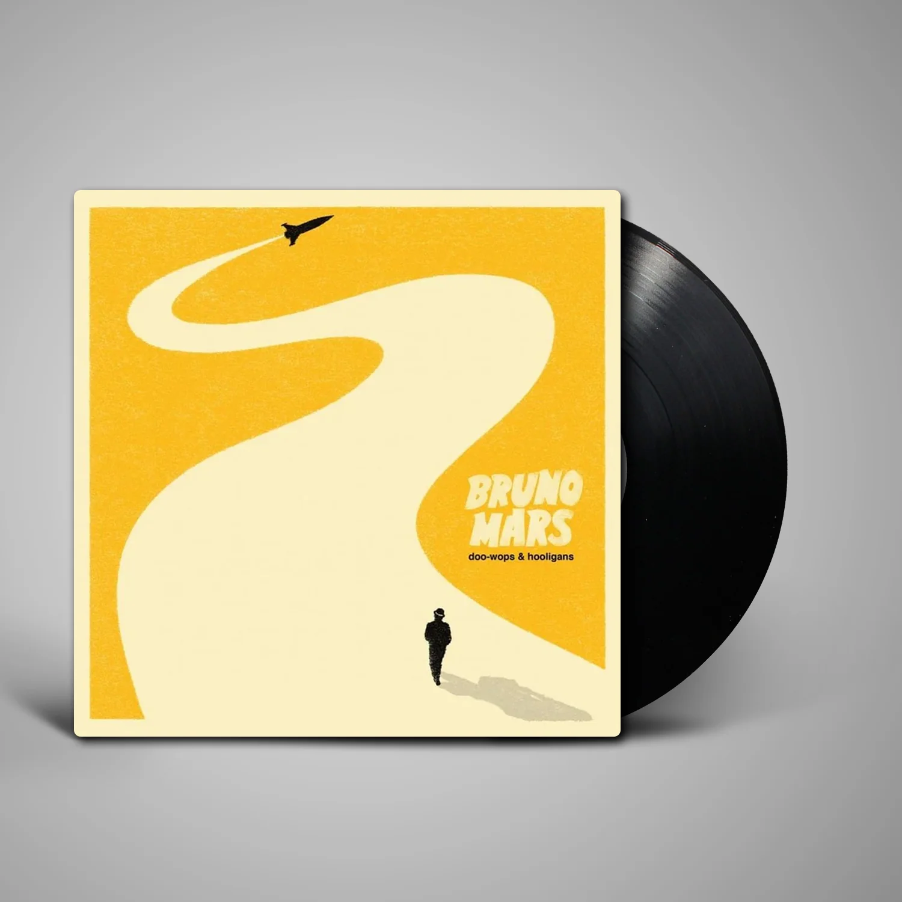

Rock
Guitarras, directos y clásicos que nunca pasan de moda.
120 discosSumergite en una selección exclusiva de vinilos de colección y disfruta de la música en su estado más puro y auténtico.
Ver catálogo

39,90 €
El sonido atmosférico de Bruno Mars, en formato vinilo.
Una pieza especial para disfrutar de cada detalle de su música.
Ideal para completar tu colección o sorprender a otro fan.
Disponible en nuestra tienda por tiempo limitado.
Fundada en 1986, Vinyl Records lleva durante casi cuatro décadas vendiendo vinilos de todas las categorías. Desde los más clásicos a los más actuales. Tus vinilos, en un solo lugar.
Elige un género y encuentra tu próximo disco.

Guitarras, directos y clásicos que nunca pasan de moda.
120 discosImprovisación y sonido cálido, ideal para una tarde tranquila.
85 discosVoces y guitarras acústicas con historias cercanas.
60 discos
Ritmo, emoción y grandes voces de todas las épocas.
70 discosSintetizadores y ritmos para bailar o concentrarte.
95 discosOrquestas y solistas grabados para escuchar sin prisa.
50 discosDescubre los artistas y álbumes que han dejado huella en la historia de la música.
Bruno Mars, cuyo nombre real es Peter Gene Hernández, nació el 8 de octubre de 1985 en Honolulu, Hawái. Desde pequeño estuvo rodeado de música y desarrolló su talento como cantante y músico.
En 2010 publicó su primer álbum de estudio, Doo-Wops & Hooligans, que alcanzó un gran éxito internacional. El disco combina pop, R&B y otros sonidos, con melodías pegadizas y letras románticas.
Entre sus canciones más populares están Just the Way You Are, Grenade, The Lazy Song y Marry You. Este álbum fue fundamental para dar a conocer al artista en todo el mundo.
En Vinyl Records destacamos este disco por su personalidad musical y por ser una opción especial para los coleccionistas de vinilos.
Calle del Mar 24
Valencia, España
hola@vinylrecords.es
+34 611 234 567
Lunes a sábado
10:00 - 20:00